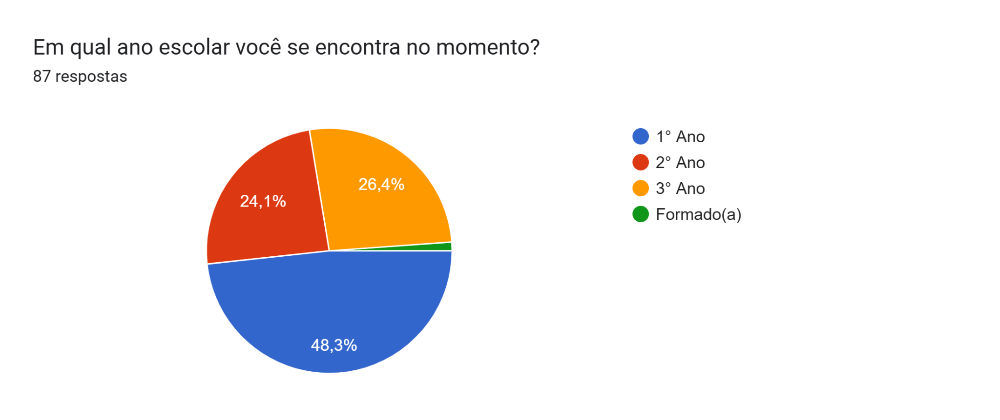
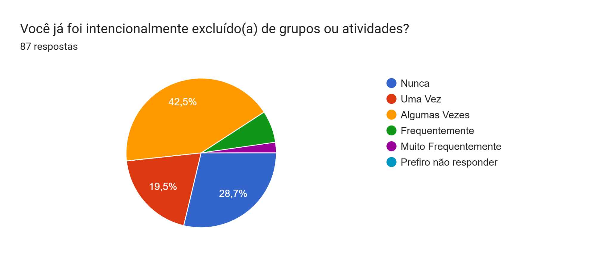
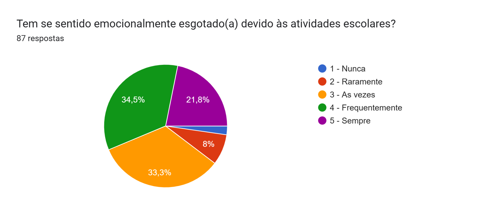
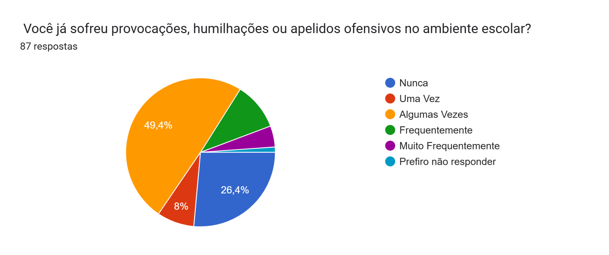
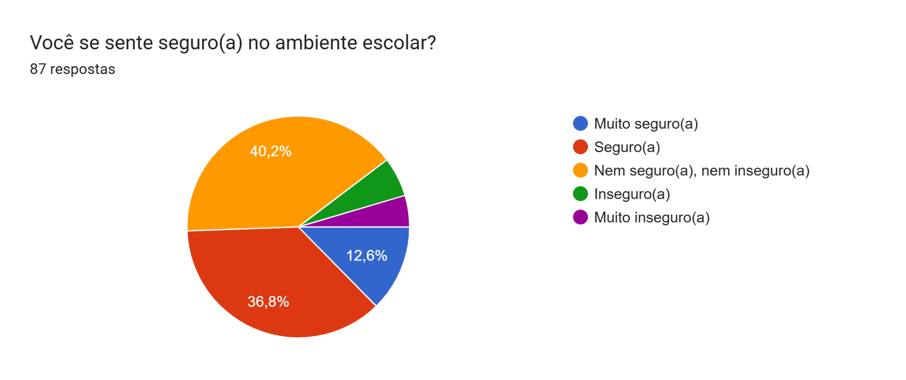
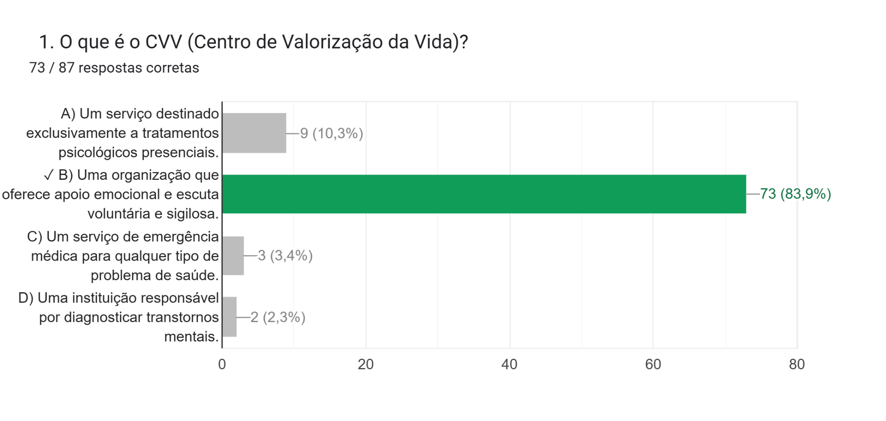
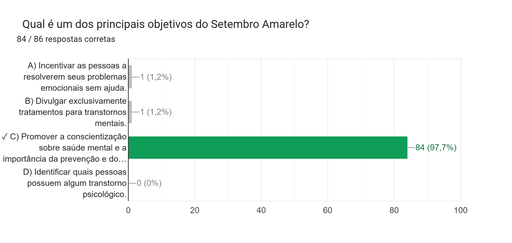
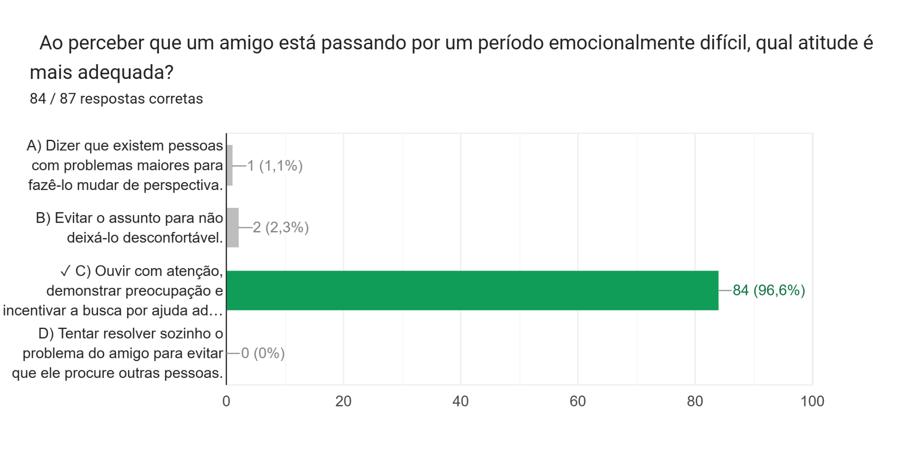
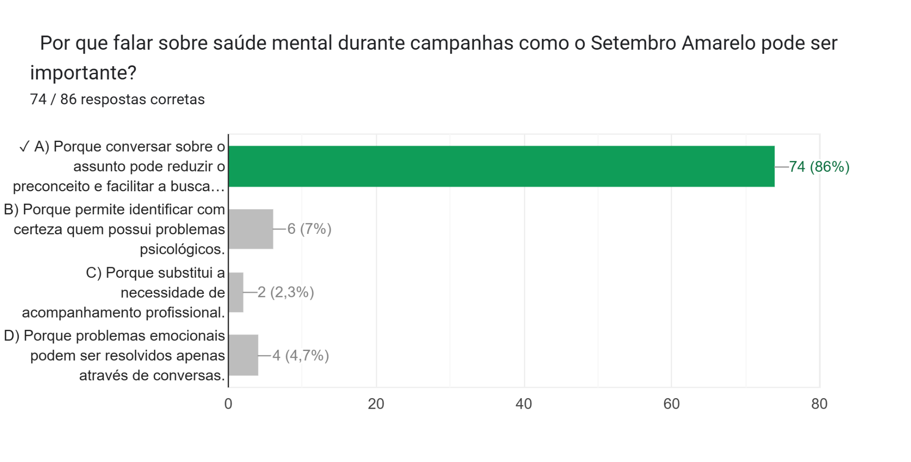
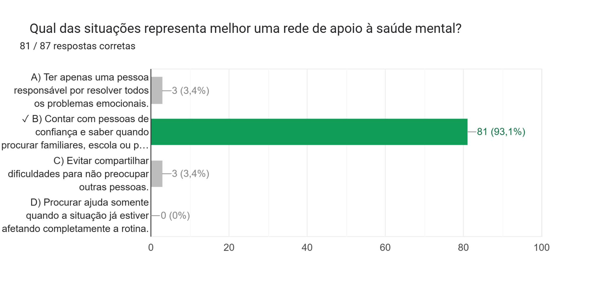

Os resultados mostram como estudantes percebem a própria experiência escolar e o quanto reconhecem caminhos de cuidado em saúde mental. Mais do que produzir um ranking, a pesquisa ajuda a localizar situações que merecem escuta.
Os gráficos estão organizados em duas leituras: Pessoais, sobre as experiências vividas na escola, e Questionário, sobre o reconhecimento de informações e caminhos de cuidado. Os resultados representam esse grupo de participantes e não toda a comunidade escolar.
As experiências pessoais revelam sinais que pedem cuidado.
O diagnóstico mais preocupante está na combinação entre exclusão, ofensas e insegurança. Uma parcela relevante relata ter sido deixada de fora de grupos ou atividades, enquanto provocações, humilhações e apelidos ofensivos também aparecem na rotina escolar. Esses sinais apontam para a necessidade de fortalecer a convivência e os canais de escuta.
A exaustão emocional é o alerta mais forte: muitos estudantes afirmam sentir-se esgotados com frequência. O fato de quase metade não se sentir plenamente segura reforça que a escola precisa olhar para o ambiente, e não apenas para o desempenho ou para casos individuais. Como aspecto positivo, parte dos estudantes relata experiências de segurança e ausência de ofensas, o que mostra que já existem referências de proteção a serem ampliadas.





O conhecimento sobre cuidado é um ponto forte, mas ainda pode avançar.
O resultado mais positivo é a capacidade de reconhecer ações de prevenção, formas de apoiar alguém em sofrimento e a importância de uma rede de apoio. Esse repertório reduz o isolamento e cria condições para que a ajuda seja procurada mais cedo.





Os dados apontam caminhos, mas não definem pessoas.
A pesquisa foi respondida por participação voluntária e reúne percepções de um grupo específico. Por isso, os percentuais não devem ser generalizados para todos os estudantes nem usados para diagnosticar ansiedade, depressão, bullying ou qualquer outro problema.
Um resultado é um convite para perguntar melhor, ouvir com cuidado e agir em conjunto.
O principal contraste encontrado é justamente esse: existe conhecimento sobre prevenção e apoio, mas ainda há relatos relevantes de exaustão, exclusão, ofensas e insegurança. A escola pode usar essa diferença para fortalecer ações de escuta, convivência respeitosa e encaminhamento para ajuda especializada.
Os gráficos apresentam as respostas coletadas no formulário. Percentuais foram mantidos conforme os arquivos originais e podem variar por arredondamento.
A sua experiência também ajuda a construir esse retrato.
Responder leva poucos minutos e contribui para que o projeto represente melhor as pessoas que fazem parte da escola. Compartilhe apenas aquilo que se sentir confortável em contar.
Responder à pesquisa